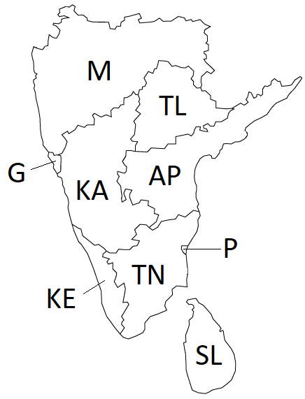

Assignment 3
Written Assignment - CSP and Propositional Logic
NOTE: THIS ASSIGNMENT IS DUE BEFORE START OF CLASS. NO LATE SUBMISSIONS WILL BE ACCEPTED.
Problem 1
30 points (+10 Points EC).
The following outline map was obtained from a map of the Indian
Subcontinent.

Figure 1. Outline Map of Southern part of Indian Subcontinent.
Your
job is to color the various sections such that no two sections
sharing a border have the same color. You are allowed to use the colors
(Red, Green, Blue).
Part a: Draw
the Constraint Graph for this problem. Can you use this information to
simplify the problem?
Part b:
Assuming you are using Backtracking search to solve this problem and
that you are using both MRV and Degree heuristic to select the
variable, Which variable will be selected at each level of the search
tree [You do not need to draw the tree. Just let me know which variable
will be selected and why (MRV and degree values)]. Note: Multiple
possible correct answers. You only have to give one.
Part c: Assume you assign the color 'Red' to the first
variable selected in part b. Show the steps involved in checking the
remaining legal values for all other variables using Arc Consistency.
Part d: EC (10 points): Give one valid solution to this
problem. (You just have to give the solution. No need to give all the
steps)
Problem 2
10 points.
Two logical statements A and B are logically equivalent if A
<=>
B. We have two knowledge bases, KB1 and KB2.. Write a function
CHECK_EQUIVALENCE(KB1, KB2) that:
- returns true if KB1 and KB2 are logically equivalent.
- returns false otherwise.
Your pseudocode can use or modify any code from the textbook or
slides, and can call any of the functions given in the textbook or
slides, as long as such code and functions are used correctly, with
correct names for the functions, and with well-specified values for all
variables and arguments.
Problem 3
10 points.
| A |
B |
C |
KB |
S1 |
| True |
True |
True |
True |
True |
| True |
True |
False |
False |
True |
| True |
False |
True |
True |
True |
| True |
False |
False |
False |
True |
| False |
True |
True |
False |
False |
| False |
True |
False |
False |
False |
| False |
False |
True |
False |
False |
| False |
False |
False |
False |
False |
KB and S1 are two propositional logic statements, that are constructed
using symbols A, B, C, and using various connectives. The above truth
table shows, for each combination of values of A, B, C, whether KB and
S1 are true or false.
Part a: Given the above
information, does KB entail S1? Justify your answer.
Part b: Given the above
information, does statement NOT(KB) entail statement NOT(S1)? Justify
your answer.
Problem 4
10 points.
Suppose that some knowledge base contains various
propositional-logic sentences that utilize symbols A, B, C, D
(connected with various connectives). There are only two cases when the
knowledge base is false:
- First case: when A is true, B is true, C is true, D is true.
- Second case: when A is true, B is false, C is true, D is false.
In all other cases, the knowledge base is true. Write a conjunctive
normal form (CNF) for the knowledge base. [Hint: Generate a
statement that is false in the cases given above. Then convert it into
CNF].
Problem 5
15 points.
On April 20, 2017, John and Mary sign the following contract:
- If it rains on May 1, 2017, then John must give Mary a check for
$10,000 on May 2, 2017
- If John gives Mary a check for $10,000 on May 2, 2017, Mary must mow
the lawn on May 3, 2017.
What truly happened those days is the following:
- it did not rain on May 1, 2017
- John gave Mary a check for $10,000 on May 2, 2017
- Mary mowed the lawn on May 3, 2017.
Part a: Write a propositional-logic
statement to express the contract. Make sure that, for each symbol that
you use, you clearly define what that symbol stands for.
Part b: Write a logical statement to
express what truly happened. When possible, use the same symbols as in
question 4a. If you need to define any new symbols, clearly define what
those new symbols stand for.
Part c: Was the contract violated
or not, Justify your answer (For contract violation, the Contract must
be false in a model where the Events are true)
Problem 6
15 points.
Consider the KB
(A <=> B) AND ((B AND C) => D)) AND (C
<=> E) AND A AND E
Is this KB in Horn Form? If not, can you convert it into Horn from? If you can, give the Horn form representation.
Using Backward chaining (if possible), check if this KB entails the statement: D
Problem 6
10 points.
Convert the following scentences to CNF
Part a. (A
<=> (B AND C))
Part b. (NOT
(B AND A)) => C
How to submit
- The answers can be typed as a document or handwritten and
scanned.
- Name files as
assignment3_<net-id>.<format>
- Accepted document formats .pdf. If you are using
Word, OpenOffice or LibreOffice, make sure
to
save as .pdf
- Please do not submit
.txt files.
- If
you are scanning handwritten documents make sure to scan it at a
minimum of 600dpi and save as a .pdf or .png file. Do not
insert images in word document and submit.
- If there are multiple files in your submission, zip them
together as assignment3_<net-id>.zip.